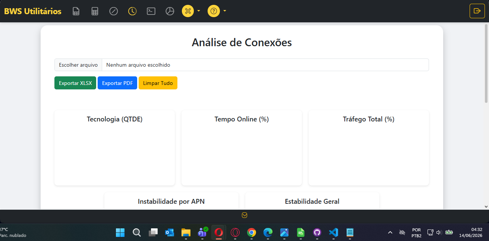
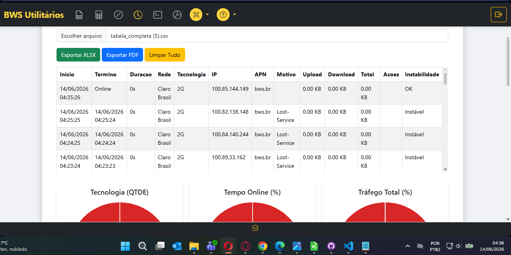
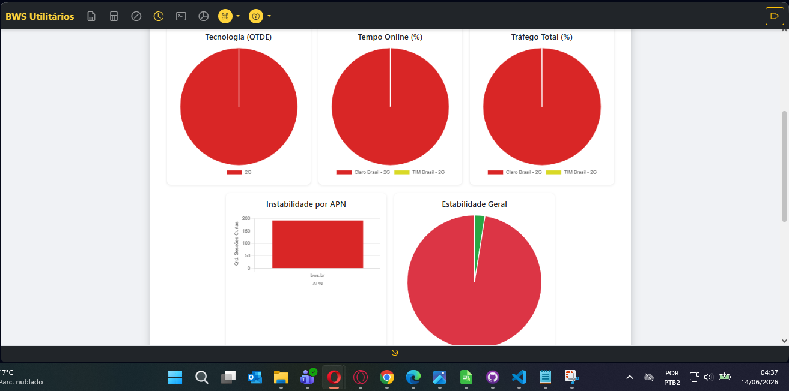
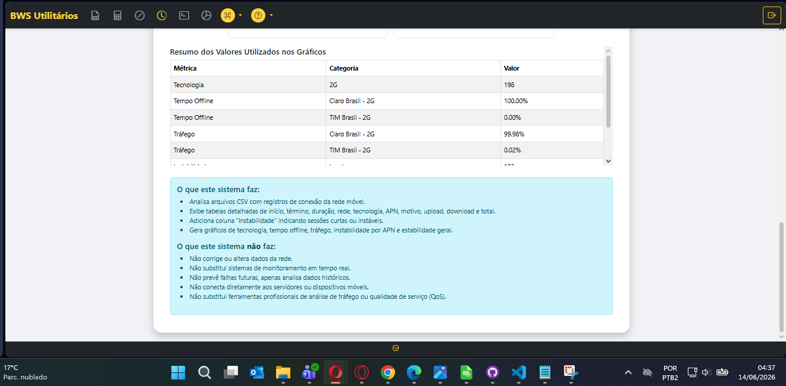
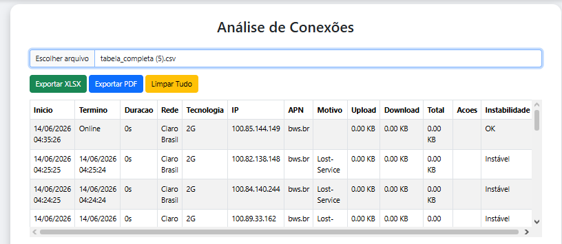
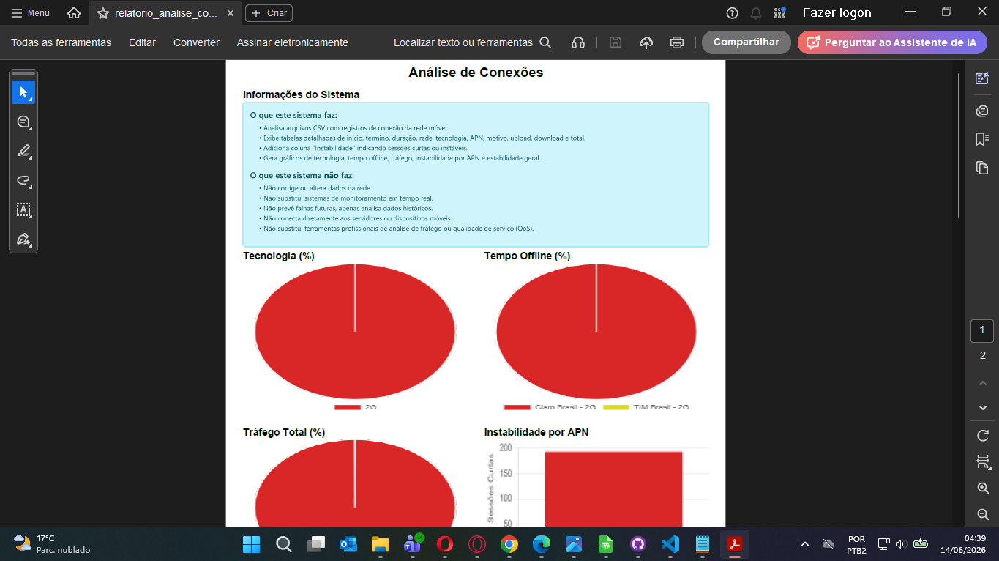
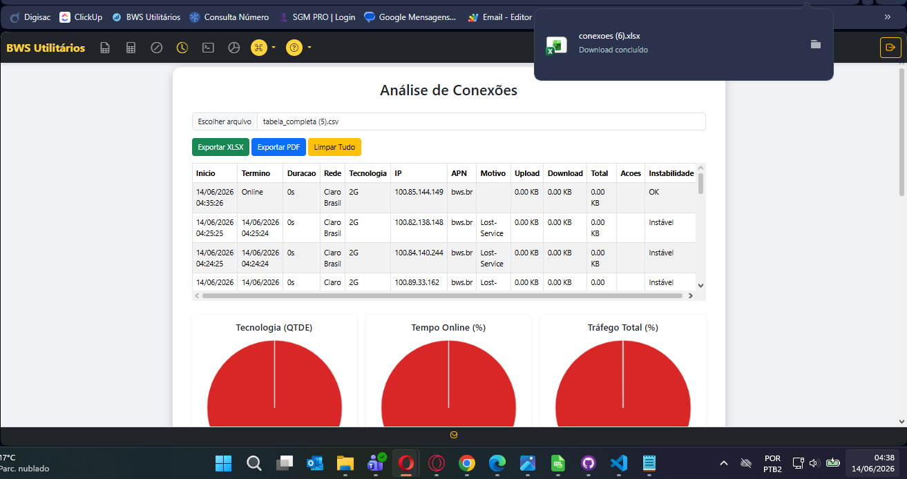
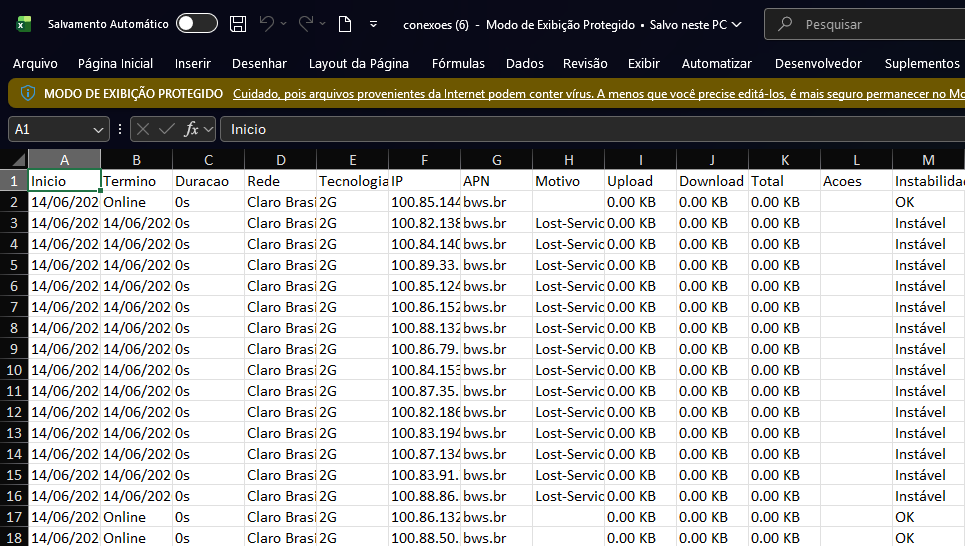

Analise conexões, tempo online, tráfego por operadora e estabilidade da APN com gráficos interativos e relatórios exportáveis.
Análise completa de conectividade
A ferramenta analisa quantidade de conexões, tempo online, tráfego por operadora e estabilidade da APN, gerando gráficos e relatórios detalhados.

Na tela principal, faça o upload do histórico de conexões. O sistema processará os dados e analisará a quantidade de conexões, tempo online, total de tráfego por operadora e a estabilidade da APN.

O sistema exibe o histórico completo de conexões com todos os dados que serão utilizados para criar os gráficos e tabelas. Esses dados incluem timestamps, operadoras, tempo de conexão e tráfego.
Os dados do histórico alimentam todos os gráficos e análises da ferramenta

Descendo na página, você encontra os gráficos interativos que mostram a qualidade da conexão, incluindo:

No final da página, os dados que constroem os gráficos são apresentados em números e porcentagens, permitindo uma análise precisa da qualidade da conexão.
Conexões
1,247
Tempo Online
98.3%
Estabilidade
95.7%
Tráfego Total
2.4 GB

A ferramenta oferece dois botões de exportação:
Baixa a tabela completa que fica logo abaixo dos botões, com todos os dados de conexão e estabilidade.
Baixa os gráficos juntamente com a tabela que contém os dados que constroem os gráficos.

O relatório PDF gerado contém todos os gráficos de qualidade da conexão juntamente com a tabela de dados que os constroem, perfeito para compartilhar com a equipe ou clientes.

Ao exportar para Excel, você obtém os dados da tabela que mostram a estabilidade e dados de conexão localizada logo abaixo dos botões, permitindo análises personalizadas.

O relatório Excel completo inclui todos os dados analisados, permitindo filtros, gráficos personalizados e compartilhamento facilitado com a equipe técnica.
Dica: Utilize o Excel para criar análises personalizadas e dashboards adicionais baseados nos dados de conexão.
1. Upload
Histórico de conexões
2. Análise
Gráficos e métricas
3. Visualização
Dados e porcentagens
4. Exportar
XLSX ou PDF
Análise de Conexões · Saitro